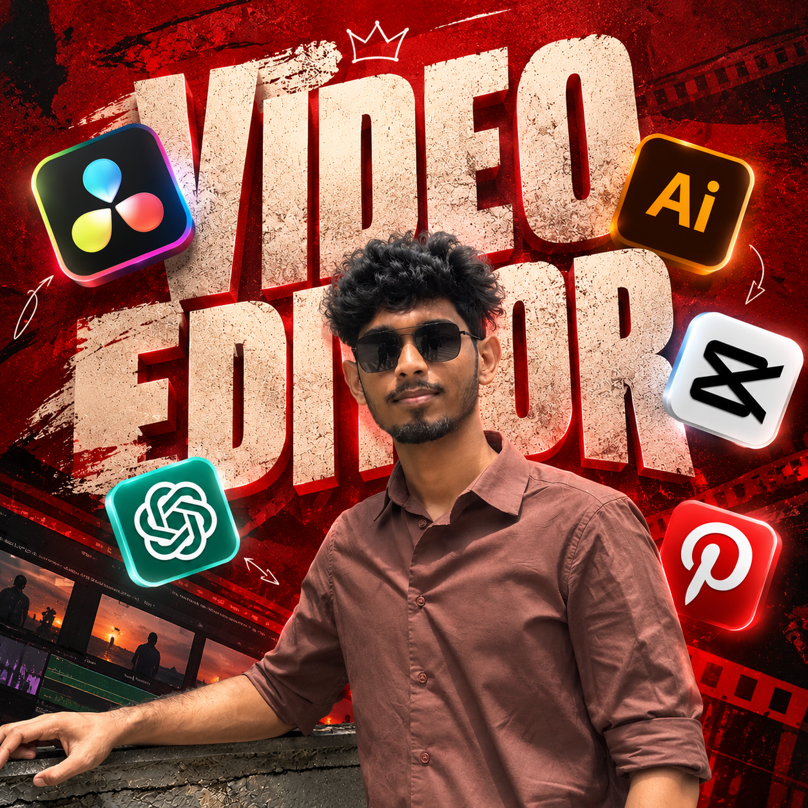

I turn moments
into cinematic
stories.
Every frame has a feeling. I shape footage through thoughtful editing, rich colour, and immersive sound into stories people want to watch again.
- 24fps masters
- 4Kdelivery
- DaVincicolour science
The pace.
The feeling.
A glimpse into my world of video editing — where rhythm, emotion, and sound come together to turn raw footage into stories that stay with you.
Frames that
stay with you.
Every project is cut with intention. Click any project card below to watch the full cut, inspect the color grade, and review technical details.
Raw footage to
film print look.
Drag the slider horizontally to compare flat RAW/Log camera footage with the finished cinematic colour grade, Kodak 2383 film emulation, and skin-tone harmony.

Every cut tells
A Story.
I'm Raja, a video editor passionate about turning raw footage into compelling visual stories. I specialize in crafting engaging edits through thoughtful pacing, seamless transitions, and carefully selected music and sound effects.
From emotional wedding films and dynamic social media reels to cinematic commercials, I focus on creating impactful videos that capture attention, communicate ideas, and connect with audiences.
Made for your
kind of story.
End-to-end post-production services tailored for filmmakers, couples, brands, and content creators.
Wedding & engagement films
Emotion-led teasers and cinematic highlight films with rhythm-locked cuts, speech editing, and music sync.
Reels & vertical 9:16
High-energy cuts with dynamic pacing, motion graphics, beat drops, and clean platform-ready vertical formatting.
Narrative & short film cutting
Story-first scene construction, dramatic tension pacing, character arcs, and seamless continuity.
DaVinci Resolve colour grading
Colour space transforms, skin-tone preservation, contrast curves, and bespoke film print look emulations.
Sound design & audio mixing
Multi-layered Foley, atmospheric soundscapes, punchy impact effects, and dialogue audio noise cleanup.
Travel, brand & YouTube
Travel documentaries, brand launch promos, festival recaps, and creator YouTube edits built for audience retention.
From first cut
to final master.
A structured, hassle-free process keeps communication effortless and delivery on time.
Footage & Brief
You send footage via Google Drive, Dropbox, or Frame.io. We align on music, tone, references, and delivery formats.
Assembly & Rough Cut
I organize bins, sync audio, and sculpt the narrative pacing into an initial draft review link.
Grade, Sound & Polish
We incorporate your feedback, dial in the DaVinci Resolve color grade, balance skin tones, and build immersive sound design.
Master Delivery
You receive pristine 4K UHD and platform-optimized files ready to publish and impress.
LET'S CREATE
SOMETHING GREAT
Whether you're planning a wedding film, short-form reel batch, travel documentary, or commercial project, I'm here to help you create something great. Send your details below and I will get back to you within 24 hours.